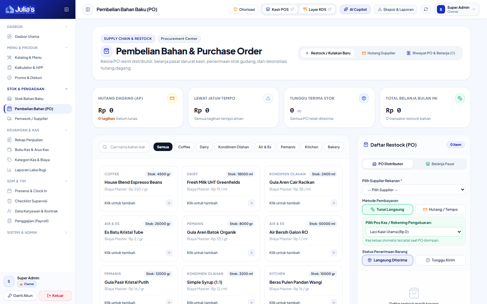

SOP & USER MANUAL RESMI • BUKU 2

Untuk menjaga akuntabilitas dan efisiensi kepemimpinan di outlet, sistem membagi wewenang operasional antara Shift Leader dan Store Manager sebagai berikut:
| Area Kerja / Modul |
Tanggung Jawab Shift Leader (LEADER) |
Tanggung Jawab Store Manager (MANAGER) |
| Supervisi Harian & Sanitasi |
Mengisi checklist pembukaan/penutupan, cek kebersihan area bar, dan kalibrasi mesin espresso. |
Mengevaluasi rekap kepatuhan checklist mingguan tim dan memberi teguran/evaluasi. |
| Otorisasi Kasir (PIN Approval) |
Memasukkan PIN langsung di meja kasir saat mendampingi pembatalan pesanan (*Void*). |
Menyetujui permohonan Void/Refund langsung maupun via Remote Approval dari smartphone/tablet. |
| Inventori & Stok Opname |
Menghitung fisik bahan baku (*Stock Opname* harian/mingguan) dan mencatat waste tumpah. |
Menyetujui hasil selisih opname, investigasi kebocoran bahan, dan penyesuaian saldo sistem. |
| Pengadaan Bahan (Purchases) |
Membuat draf pengajuan belanja (*Purchase Order*) saat stok bahan menipis. |
Menyetujui PO, memilih vendor supplier, dan meneruskan ke tim Finance untuk pembayaran. |
| Menu, Resep & Kalkulator HPP |
Memeriksa takaran resep yang digunakan barista agar konsisten dengan standar SOP. |
Membuat/mengedit menu, mengatur takaran resep gramasi, dan menetapkan margin laba HPP. |
| Jadwal Shift & SDM |
Memantau kehadiran fisik rekan kerja saat bertugas di shift yang bersangkutan. |
Membuat jadwal shift kerja mingguan, evaluasi KPI tim, dan review draf payroll bulanan. |
Setiap pembatalan nota (*Void*), retur uang (*Refund*), pemberian diskon manual, atau pembukaan laci kasir manual mewajibkan persetujuan Leader/Manager.
Sistem Julia's Coffee menggunakan metode pemotongan stok otomatis (*recipe deduction*). Setiap cangkir kopi yang terjual di POS akan otomatis memotong gramasi biji kopi, mililiter susu, dan sirup di gudang.

Manajemen Pengadaan: Daftar PO bahan baku, status persetujuan, dan tombol verifikasi barang masuk (*Mark Received*).
Untuk menaikkan omzet pada hari sepi (*slow hours*), Manager dapat mengatur promo diskon melalui menu Promo & Diskon:
Manager memiliki dasbor komprehensif untuk memantau detak jantung operasional outlet secara langsung:
| ✅ HAL WAJIB DILAKUKAN (DO) |
❌ DILARANG KERAS (DON'T) |
| Selalu periksa fisik nota dan alasan pelanggan sebelum memasukkan PIN otorisasi Void/Refund. |
Memberitahukan 4-digit PIN otorisasi kepada kasir agar kasir bisa input sendiri (*Bypass PIN*). |
| Lakukan kalibrasi grinder espresso (*dial-in*) dan cek temperatur chiller susu di awal shift. |
Mengabaikan atau menunda pencatatan selisih *Stock Opname* hingga akhir bulan. |
| Periksa kesesuaian fisik barang masuk dari supplier dengan dokumen pesanan (PO) sebelum klik 'Terima'. |
Membuat PO pembelian fiktif atau menerima barang pesanan yang kemasannya rusak/kedaluwarsa. |
| Berikan evaluasi berkala kepada kasir yang memiliki frekuensi pembatalan nota (*Void*) tidak wajar. |
Meninggalkan outlet tanpa menunjuk penanggung jawab Shift Leader saat jam operasional berlangsung. |